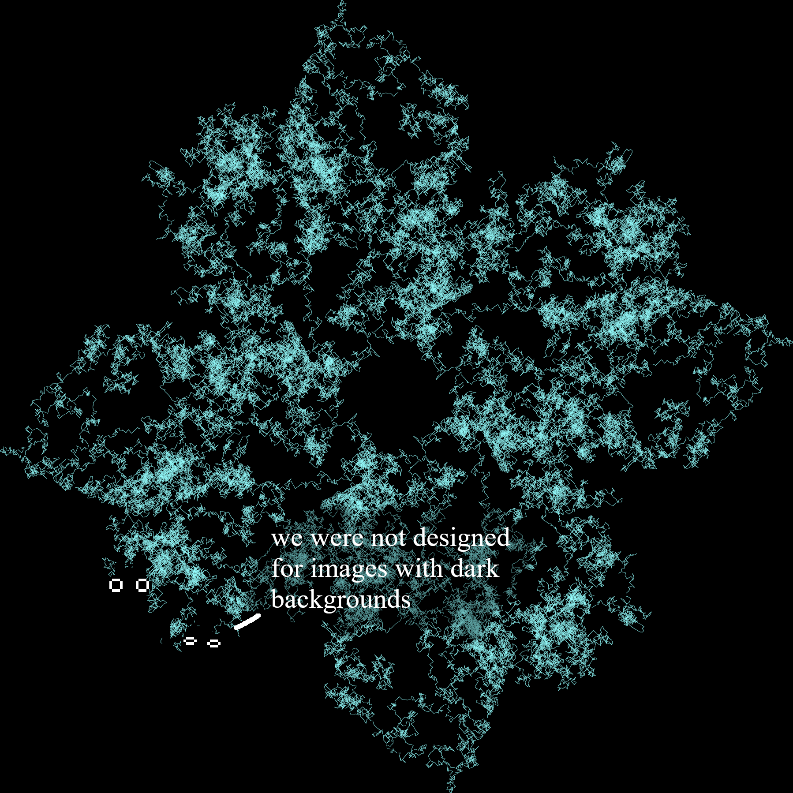

Growing Flowers in Finite Fields (Part 0)#
This is an exploration of how visualizing the behavior of a mathematical object (called a finite field) leads to drawings such as this:

The structure of the image is chaotic at a small scale, but has striking overall symmetry.
Part 0 will develop the notion of a finite field from scratch, starting from basic integer arithmetic. If you’re familiar with these constructions, or just want to see cool shapes, skip to part 1.
Modular Arithmetic#
Let’s begin in the world of integers, in which live the infinite the positive and negative whole numbers
This world comes with rules which combine pairs of numbers. You are probably familiar with them: they are called addition, subtraction, and multiplication.
Since this is an imaginary world, we can experiment on it however we want. We might decide to come up with silly rules, and see how its inhabitatnts behave under them. Perhaps today I decide that \(3 = 0\). What things must be true then?

If I’m allowed to replace \(3\) with \(0\) wherever I want, then
so I might then conclude that, in this world, \(7 = 1\) and \(-4 = 2\). In fact, after playing in this world a little more, I might realize that every integer is now equal to either 0, 1, or 2. Why? If we have an integer \(x\), we can use long division to write \(x = 3q + r\), where \(q\) is the quotient, and \(r\) is the remainder, which must be 0, 1, or 2. Since in this world, \(3=0\), the \(3q\) term vanishes and we are left with \(x = r\).
By imposing this simple rule, we have reduced the population of this world from infinite to just \(3\).
My favorite way to visualize this world is to imagine myself taking the infinite line of integers, twirling it into a coil like one of those ribbons on a stick people dance with, and flattening it onto a circle using some kind of infinite hydraulic press, so that:
the numbers \(\dots, -3, 0, 3, 6, \dots\) all get flattened onto the value \(0\), becoming the same,
\(\dots, -2, 1, 4, 7, \dots\) get flattened onto \(1\), and
\(\dots, -1, 2, 5, 8, \dots\) get flattened onto \(2\).
{kind=link}
It’s more mathematically precise to call the three inhabitants of this new world “equivalence classes” rather than numbers - since according to the above view, the number \(0\) in this world is some kind of amalgamate blob of all the numbers which are multiples of \(3\). To make this distinction clear, we will put brackets around the numbers to signal that we are talking about these number-blobs. For example, the symbol \([173]\) refers to the blob which contains 173. So, officially, we have
The nice thing about the circle visualization is it gives a convincing argument for why \(-4\) and \(2\) are the same in this world - clearly, walking 4 steps one direction around the circle is the same as walking 2 steps the other direction.
Mathematicians have given this world the official name “The Ring of Integers Modulo 3”, or just \(\mathbb Z / (3)\) for short. The number \(3\) is called the modulus.
Of course, there is nothing special about the number \(3\). We could have chosen to treat \(12\) as \(0\) instead, and in this world (called \(\mathbb Z / (12)\)), other things would be true, like:
\([9] + [5] = [14] = [2] = [9] - [7]\)
\([-8] = [4] = [16]\)
\([3] \cdot [9] = [27] = [24]+[3] = [3] \)
Doing arithmetic in this world is like doing arithmetic on a 12-hour clock face. For example, the first computation from above is carried out like this:
[image of clock]
Fields#
[image picnic]
Loosely, a field is a mathematical world in which you can add, subtract, multiply, and divide (by anything other than 0).
A non-example is the set of integers \(\mathbb Z = \{\dots, -2, -1, 0, 1, 2, \dots \}\). I can add, subtract, and multiply integers just fine - the problem lies with division. If I try to divide \(2\) by \(3\), I end up with \(2/3\), a number which exists outside my world \(\mathbb Z\) of integers.
An example of a field is the set of rational numbers \(\mathbb Q\), which consists of all integer fractions, like \(1/3\) or \(123/14234982\). I can take any two rational numbers (and give them names, say \(x\) and \(y\)), and compute \(x + y\), \(x - y\), \(xy\), and \(x/y\) (provided \(y\) is not 0), and the resulting values are again rational numbers. Another example is the real numbers \(\mathbb R\). Both of these fields have an infinite number of elements - but we want a finite one. Is there a finite world with division?
[image picnic in Q]
But what is division? Maybe you remember the slogan from elementary school,
“Dividing by a fraction is the same as multiplying by its reciprocal.”
For example, dividing by \(2/3\) is the same as multiplying by \(3/2\). But what is a reciprocal? A reciprocal of a number \(x\) is simply the number \(y\) such that, when you compute the product \(xy\), gives you \(1\). So the problem with dividing by \(3\) in the integers is simply that its reciprocal \(1/3\) is not an integer.
Now, the key question for developing the idea of a finite field: in the modular-integer worlds of the previous section, do reciprocals exist?
Returning to the world \(\mathbb Z / (3)\) which contains the three objects \([0]\), \([1]\), and \([2]\), one can compute
\([1] \cdot [1] = [1]\)
\([2] \cdot [2] = [4] = [1]\)
and so both \([1]\) and \([2]\) are in fact their own reciprocals! This means, in \(\mathbb Z / (3)\), multiplying by \([2]\) and dividing by \([2]\) are the same thing. Furthermore, this shows that we can divide by any nonzero member of this world, so that \(\mathbb Z /(3)\) is a field with 3 elements - a finite field.
[image picnic in Z/(3)]
It turns out that if the modulus \(m\) is prime, then the ring \(\mathbb Z / (m)\) is a field. (The reason for this is some relatively basic number theory, but that is out of the scope of this story.) However, if \(m\) is composite, we run into problems. Take for example \(m = 4\): what would the reciprocal of \([2]\) be? We would need an integer \(x\) such that
But \(2x\) is always even, while every number in the class \([1]\) is odd, so this is impossible! This has to do with the fact 2 shares a common factor with the modulus 4.
[image not picnic in Z/(4)]
Second-Degree Finite Fields#
If the modulus is a prime \(p\), the field \(\mathbb Z / (p)\) is notated as \(\mathbb F _p\). In this section, we will consider a new world, which consists of polynomials with coefficients from \(\mathbb F_p\).
Polynomials are sums of terms which each have a number multiplied by a power of an unkonwn \(x\), which may be familiar to those who have taken high school algebra. Some examples of polynomials over the real numbers:
\(x^2 + 3x + 5\)
\(x - 4\)
The highest power of \(x\) in a polynomial is its degree. The polynomials above have degrees 2 and 1 respectively.
The world of these polynomials is denoted \(\mathbb R [x]\) Importantly, polynomials have similar addition, subtraction, and multiplication rules. For example:
\((x^2 + 3x + 5) + (x - 4) = x^2 + 4x + 1\)
\((x^2 + 3x + 5) - (x - 4) = x^2 + 2x + 9\)
\((x^2 + 3x + 5) \cdot (x - 4) = x^3 - x^2 - 7x + 20\)
Taking these same polynomials over the field \(\mathbb F_3\) lets us reduce some of the cooefficients (recall this is the world where 3 = 0):
\(x^2 + 3x + 5 = x^2 + 0x + 2 = x^2 + 2\)
\(x - 4 = x - 1 = x + 2\)
[image cookies reduces a polynomial]
Polynomials over a field (such as the real numbers) have a similar notion of “primeness” as integers, for example,
\(x^2 - 1\) is not prime, since it can be factored into \((x+1)(x-1)\), two components of lower degree.
\(x^2 + 1\) is prime, since it cannot be split into factors of lower degree (at least over the real numbers).
“Prime” polynomials are generally called “irreducible.” (Why we need two different names for the same phenomenon is beyond me.) The key ingredient in constructing larger finite fields is the fact that we can do the same “pretend zero” thing in a polynomial world as we did with the integers, and if we choose an irreducible (prime) polynomial as the modulus, the new world will also be a field!
Let’s go to the world of \(\mathbb F_3 [x]\), which consists of polynomials whose coefficients (things multiplying the powers of \(x\)) come from \(\mathbb F_3\). Here, we will impose the new rule:
[image lemonade makes a decree]
Noting that \(x^2 + 1\) is irreducible in \(\mathbb F_3\) (it has no roots), we know the resulting world should be a field.
Observe that our new rule gives us a way to reduce any polynomial of degree 2 or more down to a polynomial of a lower degree, since \( x^2 + 1 = 0\) implies that \(x^2 = -1\). For example, in the new world,
In fact, this means every polynomial is “equal” to a polynomial of degree at most 1 in this new world, so we can actually come up with a full list of its inhabitants by taking every possible combination:
[image chart of the world (picnic)]
Since \(\mathbb F_3\) has only 3 members, these are all of the polynomials of degree at most 1. Addition works normally (well, normally as it does in \(\mathbb F_3[x]\))
\((x + 2) + (x + 1) = 2x + 3 = 2x + 0 = 2x\)
Multiplication is similar, but with the added step of reducing to a polynomial of degree at most 1 using our rule:
\((x + 2) \cdot (x + 1) = x^2 + 3x + 2 = x^2 + 0x + 2 = (x^2 + 1) + 1 = (0) + 1 = 1\)
Observe that the above computation shows that in our new world, \((x + 2)\) and \((x + 1)\) are reciprocals of each other, since their product is 1.
An important result in finite field theory is that the multiplicative elements of a finite field are generated by a single element, i.e. there is an element \(g\) such that every nonzero member of the field is equal to some power of \(g\). In our example, we can take \(g = (x + 1)\), since (using the arithmetic rules of our new world)
The powers of \((x+1)\) indeed visit every nonzero value in our field, however, they seem to do it in a somewhat chaotic, random order. In math, we often have nice, geometric ways to visualize things, especially when working with real numbers. However, in this case, things are rather abstract. In the next part, we will explore methods to visualize these worlds, and how those methods lead to the fascinating “flowers” from the introduction.
[image lemonade waters a plant in the finite field to be continued…]